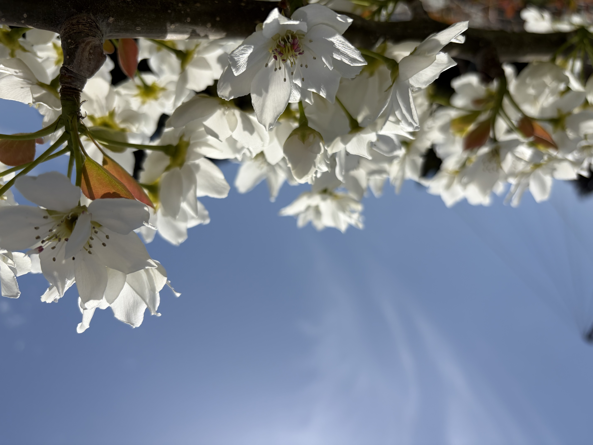
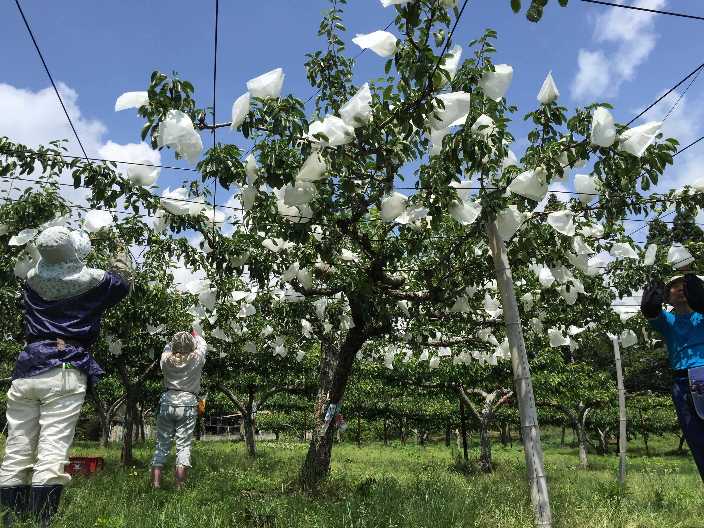
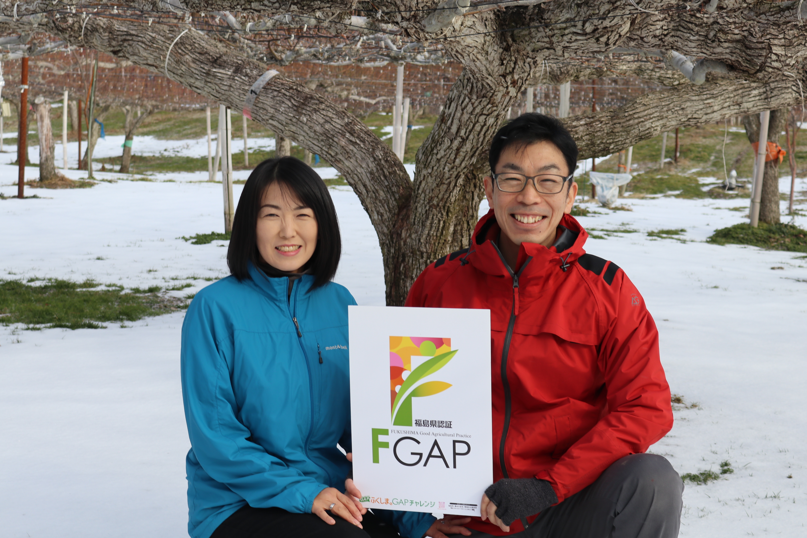
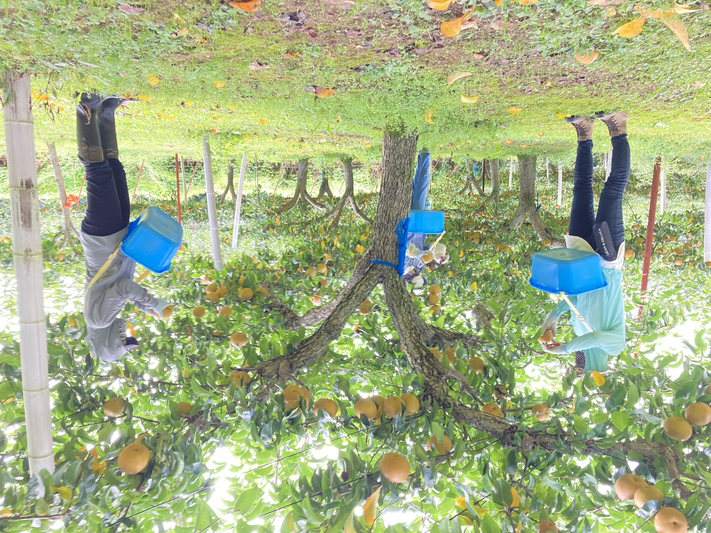
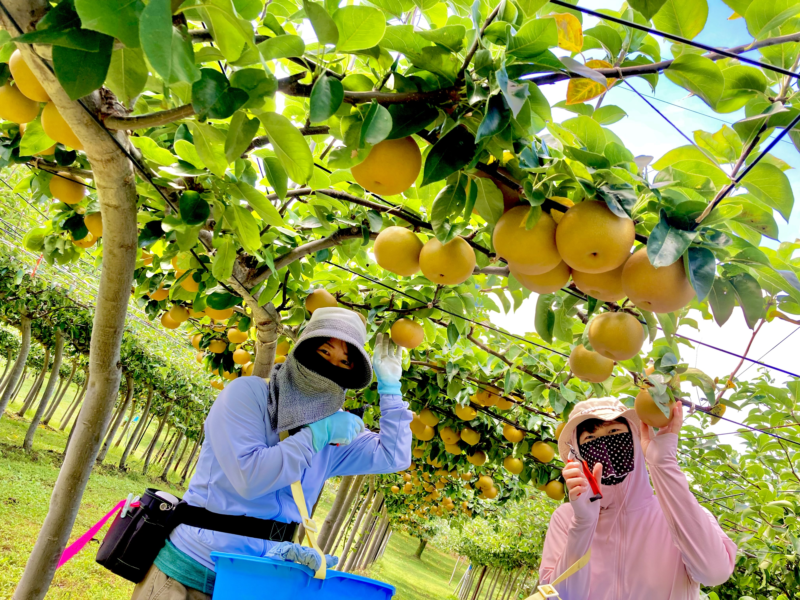

当園の取り組みについて
福島県郡山市、磐梯熱海の山あいで育てる梨・りんご。土づくりから収穫の見極めまで、私たちが大切にしていることをご紹介します。
栽培のこだわり

自然豊かな環境で育てる
上の山の恵まれた自然環境の中で、土づくりからこだわり、のびのびと育てています。春には梨の花が一面に咲き誇り、山あいの空気を受けて木々が力強く育っていきます。

一つひとつに手をかける一年
摘花・摘果から袋掛け、剪定まで、季節ごとの作業を丁寧に積み重ねています。ひとつの実に向き合う時間が、確かな美味しさにつながると考えています。

安心・安全へのこだわり
みどり認定・GAP認証を取得し、栽培記録の管理や農薬・肥料の適正な使用を徹底。安心して食べていただける梨づくりを追求しています。

一番おいしい瞬間をお届け
完熟の見極めを大切に、収穫したての美味しさをお届けします。ひとつずつ手にとって熟度を確かめながら、収穫の時期を見定めています。
取得している認証について
みどり認定
環境と調和した持続可能な農業に取り組む生産者として認定を受けています。化学農薬・化学肥料の低減など、環境にやさしい栽培を実践しています。
GAP認証（F-GAP）
福島県が定める適正農業規範「F-GAP」の認証を取得。食品安全・労働安全・環境保全の基準に沿った管理を行い、第三者の目線からも安心をお約束しています。
生産者の想い

「この土地の気候だからこそ出せる甘みがあります。
ひとつの実にかける手間を惜しまず、
毎年少しずつ、もっと美味しい梨を目指しています。」
磐梯熱海の寒暖差のある気候は、梨の甘みと果汁をぐっと引き立ててくれます。家族と地域のスタッフとで力を合わせ、剪定・摘果・袋掛け・収穫と、一年を通して畑に立ち続けています。皆様に「また食べたい」と思っていただける一玉をお届けできるよう、これからも丁寧な栽培を続けてまいります。
— 上の山彩果園
丹精込めて育てた梨・りんごを
果物の販売についてのご案内は、こちらからご覧いただけます。